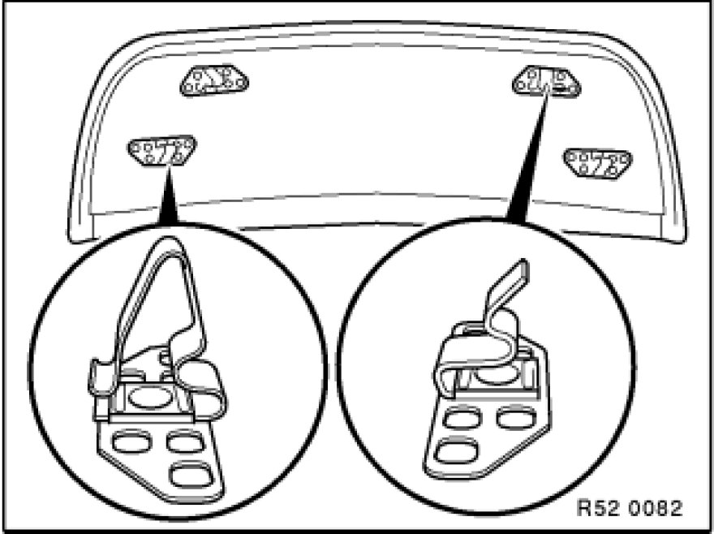

Removing and Installing/Replacing Top Rear Panel on Front Seat Backrest (Luxury Seat)
52 17 200 - Removing and installing/replacing top rear panel on front seat backrest (luxury seat)

Move backrest adjustment as far forward as possible.
Note:
If the backrest adjustment unit is defective and in rear position:
- Unhook lower rear panel Removing and Installing/Replacing Bottom Rear Panel on Front Seat Backrest (Luxury Seat) and leave suspended,
- lower rear panel can be unhooked after upper rear panel has been removed.
Pull lower rear panel on both sides (1) (if necessary in succession) towards rear (unhooks springs at bottom).
Pull rear panel upwards/backwards (2) to remove.

Installation:
The springs must be correctly located in the rear panel supports and must not be bent.
If necessary, replace defective clips.